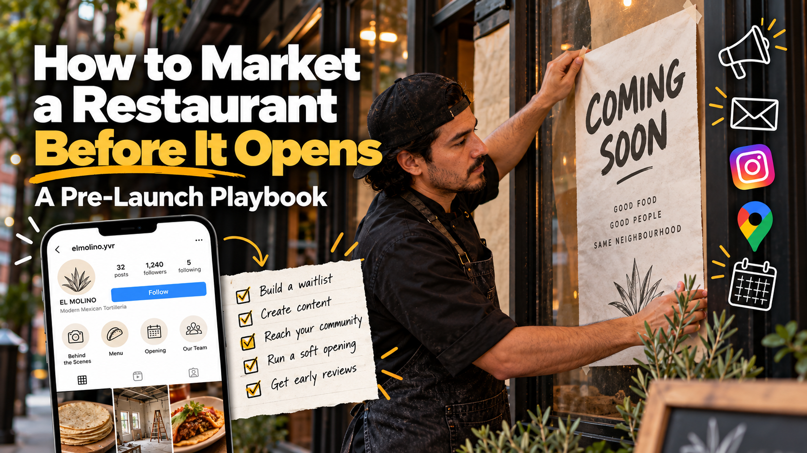

How to Market a Restaurant Before It Opens: A Pre-Launch Playbook

Most new restaurants start marketing too late. The sign goes up, the doors open, and then the owner asks, "How do we get people in here?"
By then you've lost your best advantage: curiosity. A new restaurant is never more interesting than in the weeks before it opens. People walk past the papered windows and wonder what's coming. Good restaurant pre-launch marketing turns that curiosity into a list of people ready to show up on day one.
I've worked restaurant openings from the kitchen side as a professional cook, and I've planned pre-launch campaigns as a marketer. Here's the new restaurant marketing plan I'd follow for an opening in Vancouver.
Start 8 to 12 weeks before opening
A pre-launch campaign needs time to build. A rough timeline:
- 12 to 8 weeks out: Lock your name, logo, and social handles. Claim your Google Business Profile.
- 8 to 4 weeks out: Launch your waitlist, start posting behind-the-scenes content, and reach out to local media and creators.
- 4 to 1 weeks out: Announce the opening date, run your soft opening, and send reminders to your list.
- Opening week and after: Convert early guests into reviews and regulars.
If you're already closer than eight weeks, don't panic. Compress the timeline, but keep the order.
1. Build a waitlist before you build hype
Social media followers are nice. An email or SMS list is better, because you own it and you can reach every person on it.
Create a simple landing page with one clear offer, such as:
- First access to reservations
- An invitation to a soft opening or tasting night
- A free item on their first visit
Ask only for a name and email (or phone number). Every extra field lowers sign-ups. Then send every piece of pre-launch marketing, from your Instagram bio to the poster in your window, to that one page.
This is the core idea behind my El Molino pre-launch campaign, a brand concept for a modern Mexican tortillería. Instead of chasing likes, the campaign was built to collect leads: people who raised their hand and said, "Tell me when you open."
2. Claim your Google Business Profile early
You can set up a Google Business Profile before opening day and list your opening date. Do it early, because verification can take time.
When people start searching your name after seeing your sign, you want them to find real information: your address, your cuisine, photos of the space, and a link to your waitlist. An empty or missing listing wastes that interest.
3. Turn construction into content
The build-out is your best free content, and it only happens once. Film it:
- The empty space and the first day of renovation
- The kitchen equipment arriving
- Menu testing and tasting sessions
- The team's first training day
- The chef explaining why a dish matters
People love watching something come to life. Behind-the-scenes Reels also build a connection before anyone has tasted your food, so opening day feels like the ending of a story they've been following.
4. Tease the menu, don't reveal it all
Share one dish at a time. A close-up of your signature item with "Coming this fall" builds more anticipation than posting the full menu PDF.
Use your posts to ask questions too: "Which salsa should make the opening menu?" Letting your future guests vote makes them feel invested.
5. Reach out to your neighbours and local community
Your first regulars will probably live or work within a few blocks. Before you open:
- Introduce yourself to nearby businesses and offer their staff a preview visit
- Drop flyers with your waitlist QR code in local cafés and community boards
- Connect with local food writers, neighbourhood blogs, and small creators
Small, local creators often drive more real visits than big accounts, because their followers actually live nearby.
6. Run a soft opening, and treat it as a test
A soft opening is a limited service before your official launch, often for friends, family, neighbours, and your waitlist. It has two jobs:
- Test the kitchen. Find out which dishes slow down the line, where the pass gets crowded, and what needs to change before real pressure hits.
- Collect early word of mouth. Guests who feel like insiders tell their friends.
From the kitchen side, I can't stress the first job enough. A brand-new team is still learning the menu. Don't invite 200 people to your soft opening. Keep it small, and grow each night.
7. Grand opening ideas that actually work
When it's time for the official launch, choose ideas that bring people in without breaking the kitchen:
- A first-100-guests offer, like a free dessert or a limited-edition item
- An opening week special only available for seven days, which creates urgency
- A community tie-in, such as donating part of opening day sales to a local cause
- A live element, like a tortilla-making station, a DJ, or a chef demo on the patio
- A waitlist-only night that rewards the people who signed up early
Skip the giant 50%-off deal. It attracts bargain hunters, fills the room beyond capacity, and sets a price expectation you can't keep.
8. Turn your first guests into reviews
Your first weeks decide your early rating on Google. Ask for reviews in a natural way: a small card with the bill, a thank-you email to your list, or a friendly mention from servers. Reply to every review, good or bad.
Early reviews feed your Google ranking, and your Google ranking brings in guests who never saw your pre-launch campaign.
The bottom line
The best time to market a restaurant is before it opens. Build a list, show the journey, keep the kitchen in the loop, and make your first guests feel like insiders. When opening day comes, you won't be hoping people show up. You'll already know who's coming.
Opening a restaurant in Vancouver and need help with pre-launch marketing? Get in touch.
Related: El Molino pre-launch campaign · 7 Restaurant Marketing Tips from a Professional Cook Turned Marketer